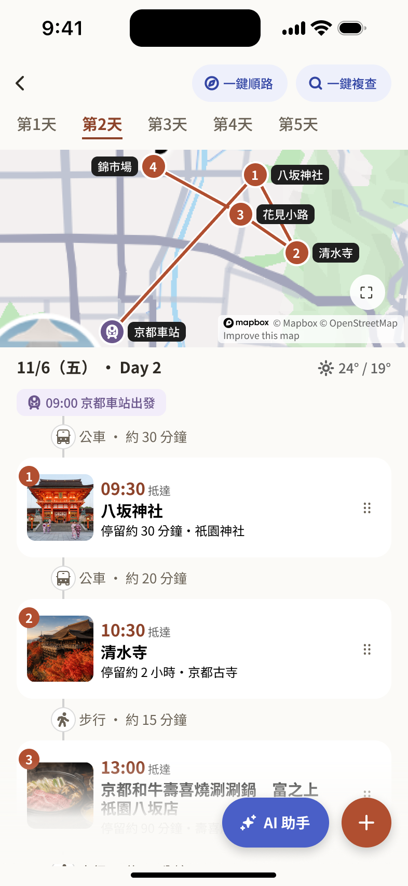
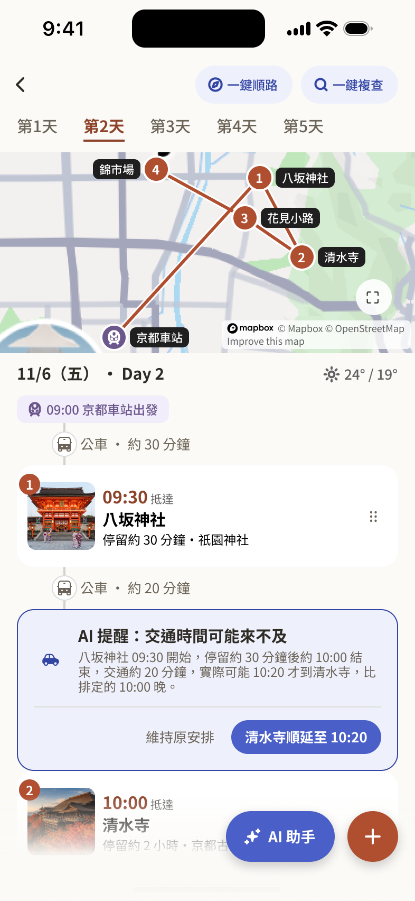
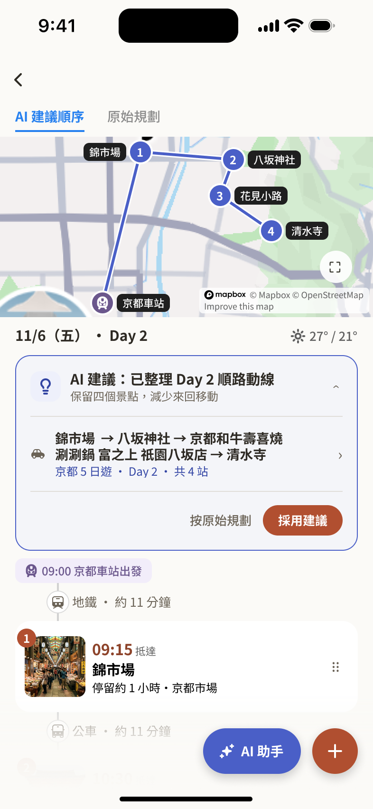
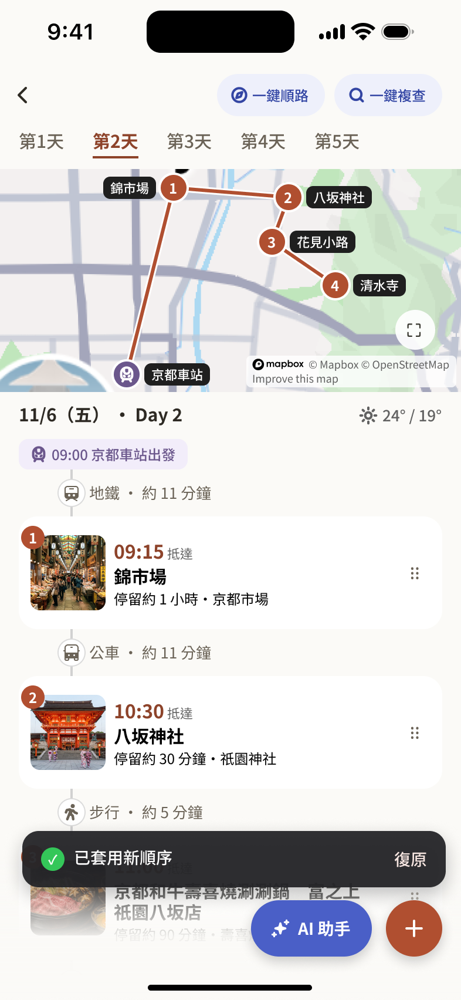

01.
Fragmented Information
收藏散落不同平台，進入規劃階段後仍需重新整理資訊。
PROJECT 001 / UX CASE STUDY
AI TRAVEL PLANNING PLATFORM
[ 01 ]
From collecting places to building realistic itineraries.
透過 AI 協助檢查旅行行程的合理性，並提供優化建議，讓旅程規劃更順暢。
MY ROLE & CONTRIBUTION
Independent UI/UX Designer & Front-end Developer
獨立完成 TROVA 從使用者研究、問題定義到 UI/UX 設計與前端實作的完整流程。
透過使用者訪談與需求分析，梳理旅程規劃中的核心痛點，並將研究洞察轉化為產品設計方向，完成資訊架構、User Flow、Wireframe、UI Design 與 Figma Prototype。
此外，獨立設計並開發 TROVA Landing Page，將產品概念轉化為可公開瀏覽的網站。
01 / THE PROBLEM
THE PLANNING GAP
旅遊規劃不只是收集感興趣的景點，還需要考慮時間、交通距離、預算與行程順序。當安排不符合實際條件時，使用者往往需要反覆調整，增加規劃負擔。
02 / USER RESEARCH
RESEARCH APPROACH
KEY RESEARCH FINDING
WHAT DID I DISCOVER?
真正困難的不是找到想去的景點，
而是把分散的收藏整理成順路、合理且可執行的每日行程。
RESEARCH / KEY FINDINGS
01 — 02
01.
收藏散落不同平台，進入規劃階段後仍需重新整理資訊。
02.
景點找齊後，仍需反覆評估交通、距離與時間，才能排出可執行的行程。
KEY TAKEAWAY
設計機會不只是整合收藏資訊，更是協助使用者評估行程的可行性。
DESIGN IMPLICATION / FROM INSIGHT TO DIRECTION
因此，我將設計重點放在降低行程規劃中的整理與判斷負擔，探索如何透過整合流程與 AI 輔助，
協助使用者建立更合理、可執行的旅程。
03 / DESIGN DIRECTION
在初期研究中，我注意到使用者放棄景點不一定代表失去興趣，因此曾探索以候補機制保留旅行選擇的可能性。
隨著問題定義逐漸明確，我將設計重心收斂至行程合理性檢查與 AI 優化建議，協助使用者在規劃階段更早發現問題，並評估更合適的安排方式。
EARLY EXPLORATION
保留旅行選擇
候補機制僅作為初期探索，未納入最終 Prototype。
FINAL DIRECTION
支援行程判斷
AI 行程檢查與優化／目前 Prototype 的核心。
DESIGN PRINCIPLES / 設計原則
01
協助使用者發現潛在規劃問題
02
讓調整建議容易理解
03
協助使用者判斷是否調整行程
以上為設計原則，不代表 Prototype 已完成所有相關互動；目前尚未據此宣稱使用成效。
04 / CORE SOLUTION
以既有行程為起點，先辨識安排中的潛在問題，再透過具體建議重新評估行程。以下皆使用專題原始 Figma 畫面，展示目前已設計的互動情境。
A / ORIGINAL ITINERARY

A / ORIGINAL ITINERARY
使用者先檢視已安排的每日行程，確認景點順序、時間與交通資訊，作為後續檢查與調整的起點。
畫面重點：Day 2 行程依序列出景點、抵達時間、停留時間與景點之間的交通方式。
B / AI REVIEW

DETAIL / AI 提醒與展開建議
AI 提醒：交通時間可能來不及
八坂神社 09:30 開始，停留約 30 分鐘後約 10:00 結束，交通約 20 分鐘，實際可能 10:20 才到清水寺，比排定的 10:00 晚。
原始 UI 局部放大（P14-C2）
B / AI REVIEW
當行程出現潛在的交通或時間衝突時，系統提供提醒與具體建議，協助使用者理解問題並評估調整方式。
畫面重點：提醒說明前一站的結束時間與交通時間，並提供「清水寺順延至 10:20」與「維持原安排」兩個選項。
C / AI OPTIMIZATION

C / AI OPTIMIZATION
透過 AI 建議的景點安排順序，使用者可以檢視原始規劃與建議結果，重新評估行程動線與安排。
畫面重點：可在「AI 建議順序」與「原始規劃」之間切換檢視，並選擇「採用建議」或「按原始規劃」。
D / OPTIMIZED RESULT

D / OPTIMIZED RESULT
完成調整後，使用者可以檢視優化後的行程，確認新的景點順序與安排內容。
畫面重點：套用後顯示「已套用新順序」提示，並提供「復原」操作。
05 / FINAL DELIVERABLES
TROVA 已完成 AI 行程檢查與優化的互動原型，並製作可公開瀏覽的 Landing Page，分別展示產品操作體驗與產品概念。
透過 Figma Prototype 展示行程檢查、問題提示與 AI 優化建議的互動流程。
獨立設計並開發的產品介紹網站，呈現 TROVA 的產品定位與核心功能。
06 / REFLECTION
研究讓我重新理解旅行規劃的問題，除了探索景點，更需要協助使用者衡量現實條件。
AI 的價值不只是提供答案，也在於協助使用者理解行程中的問題，進一步做出判斷。
未來希望透過易用性測試，確認使用者能否理解 AI 的問題提示、優化理由，以及是否能順利完成行程調整。
NEXT PROJECT / HOME RESTOCK ↗
補補 Bubu.
居家消耗品補貨 App
CASE STUDY / COMING NEXT